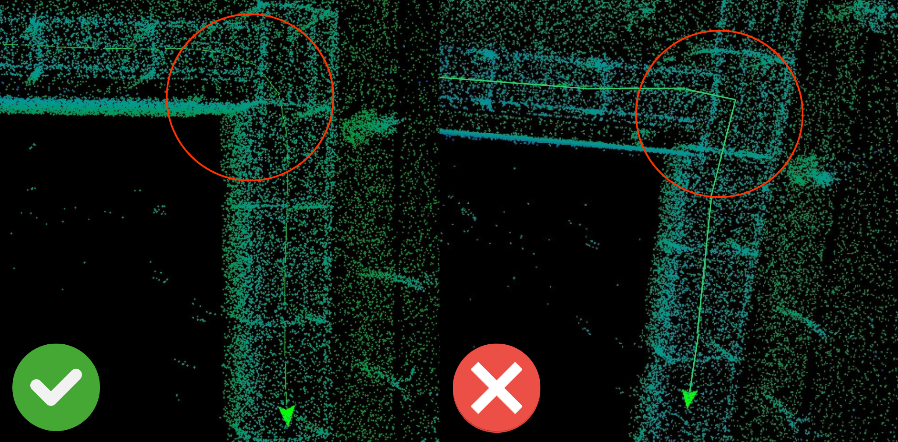

d.ASH Go
Introduction
Welcome to the d.ASH Go application user guide! This comprehensive guide will walk you through the process of installing the application and providing the necessary instructions for your map scanning process. To access the user guide for our application, please refer to Section 2 in this page. Otherwise, if you would like to scan maps on your web browser, please turn to Section 3.

Application Functions
d.ASH Go is our visualisation system that allows you to see where you've mapped on the fly in just two easy steps! The point clouds are generated in real time, giving you a preview of what the final generated map would look like.
Before starting, an internet connection from your d.ASH Pack is required. If you are having trouble connecting to your d.ASH Pack's network, please contact us here for more information.
 Real-time mapping visualisation
Real-time mapping visualisation
Joins spatial data on the fly, allowing users to generate long expressions in order to visualize the data of their surrounding environment. This can be used for transferring environmental data to autonomous robots for them to traverse through the environment.
d.ASH Go Android Application
Before installing the application, ensure that your mobile device meets the minimum system requirements.
System Requirements
| Minimum System Requirements | Recommended System Requirements |
|---|---|
| Android Tablet with support for OpenGL ES 3.2 | Android Tablet with support for OpenGL ES 3.2 |
| Operating System: Android Version 13 | Tiramisu | API Level 33 | Operating System: Android Version 13 | Tiramisu | API Level 33 |
| CPU: Qualcomm Snapdragon 720G | CPU: Qualcomm Snapdragon 888 |
| GPU: Adreno 618 | GPU: Adreno 730 |
| RAM: 4 GB | RAM: 8 GB |
Installation Guide
Click here to install the d.ASH Go application on your Android device. Alternatively, you can enter the Google Play Store and search for our app.

Quick Start Guide
The following section provides a step-by-step guide to help you start recording with your d.ASH Pack. Additional features offered by d.ASH Go are listed in the subsequent sections.
| Instructions |
|---|
1 Open your mobile device's settings app, click on Connections -> Wi-Fi, and then connect to the network of your d.ASH Pack.  When a connection has been established, your device may prompt for action as internet will not be available on the network, choose Always Connect for the device to work properly with d.ASH Pack. |
2 Open the application, ensure that all icons under d.ASH Pack Status are green in colour.  If the Wi-Fi icon is red, please check your network connection and ensure that you are connected to your d.ASH Pack. If you encounter any issues, please feel free to contact us here. |
3 Press start a new scan and check the appropriate checkboxes for the type of scan you wish to perform. Press start.  It is recommended to set your d.ASH Pack to have an upright sensor when you want non-coloured scans. On the other hand, having a slanted sensor is recommended for coloured scans. |
4 Press the start button at the bottom when you are ready to start scanning. 1. It is not possible to pause and continue a scan in the app. Scanning must be completed in one continuous session. 2. For the best results, avoid taking sharp and suddden turns when turning corners; take slow and gradual ones instead.  3. Move at a steady pace. 4. If any of the icons turn red during the scan, you will need to restart from the beginning and make sure that you are connected properly to your d.ASH Pack. If the same issue persists, please contact us for support.  Only begin scanning when you are in the desired location. |
5 Start scanning!  Swipe with one finger to rotate view, swipe with two fingers to move around the map. Pinch in and out to change the zoom. |
6 Press and hold on the stop button to finish the map scan. |
If there are major misalignments present in your scan, it is recommended to perform the scan once again. If not, you are good to go! Use your map scan for further preprocessing in d.ASH Xplorer or upload it into the d.ASH Nav application for use in robot automation.
Last updated: 10/10/2023